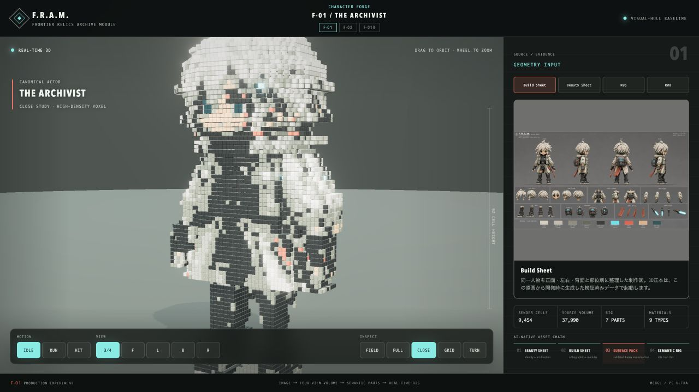
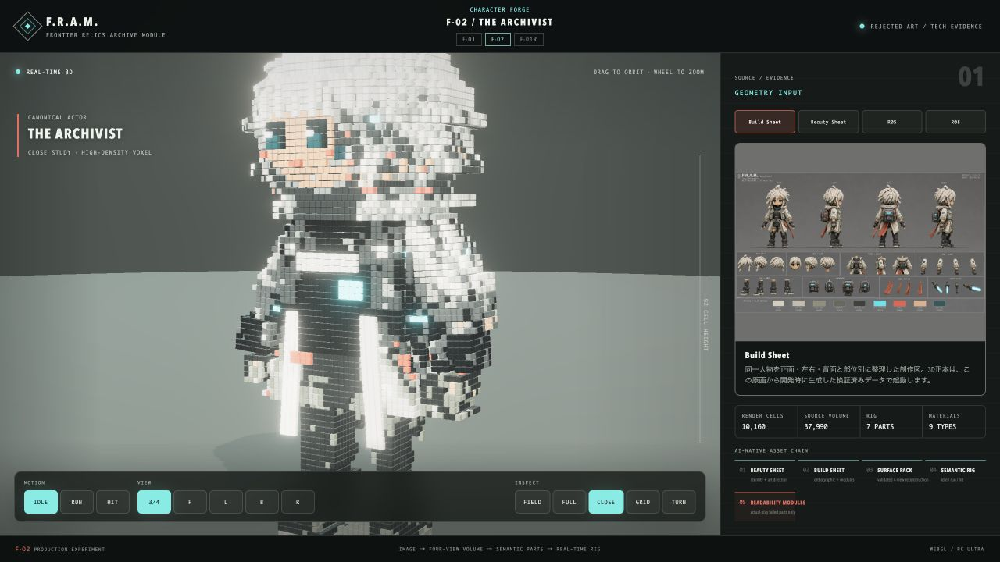
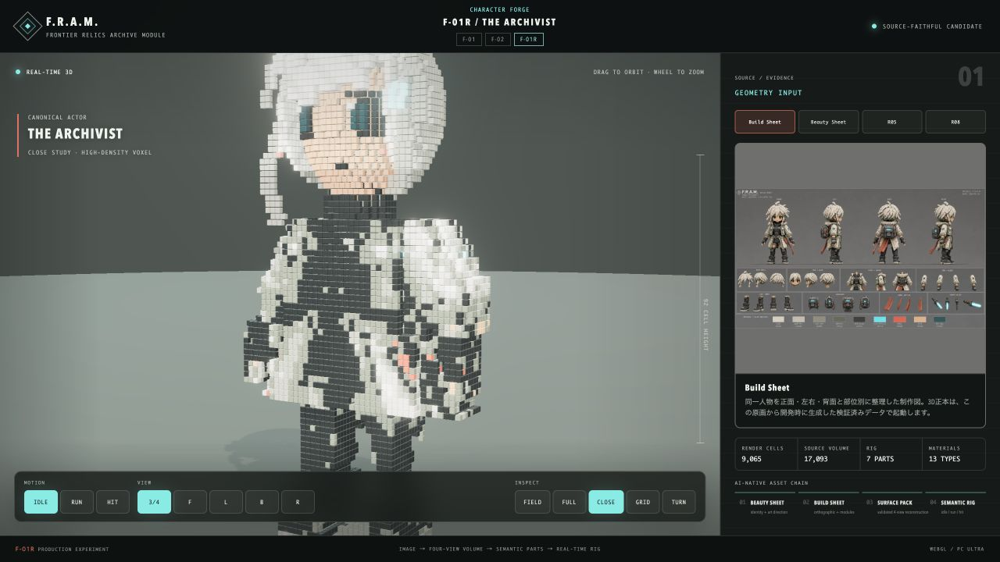

F-01R / source-faithful head reconstruction
Beauty Sheetを人物性の正本とし、F-01・F-02・F-01Rを同じForgeカメラで比較。
ART AUTHORITY
F-01 Beauty Sheet

BASELINE
F-01 visual hull

TECH EVIDENCE
F-02 rejected art patch

NEW CANDIDATE
F-01R semantic modules